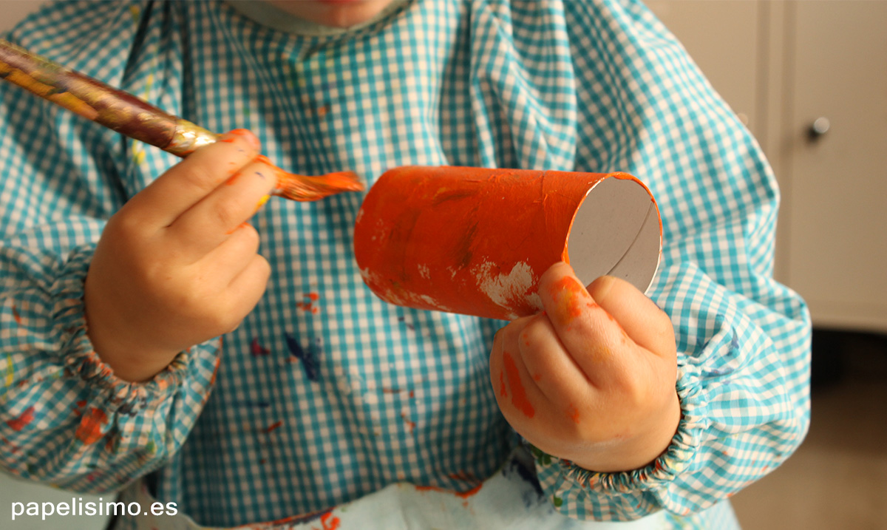
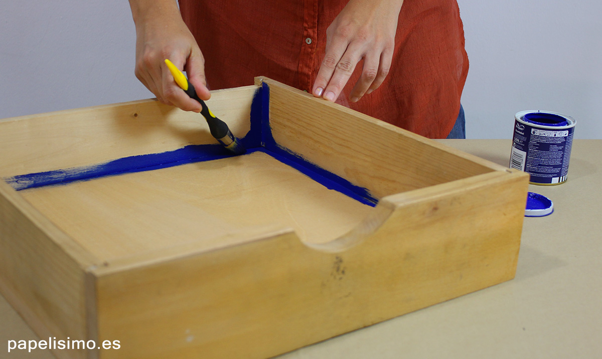
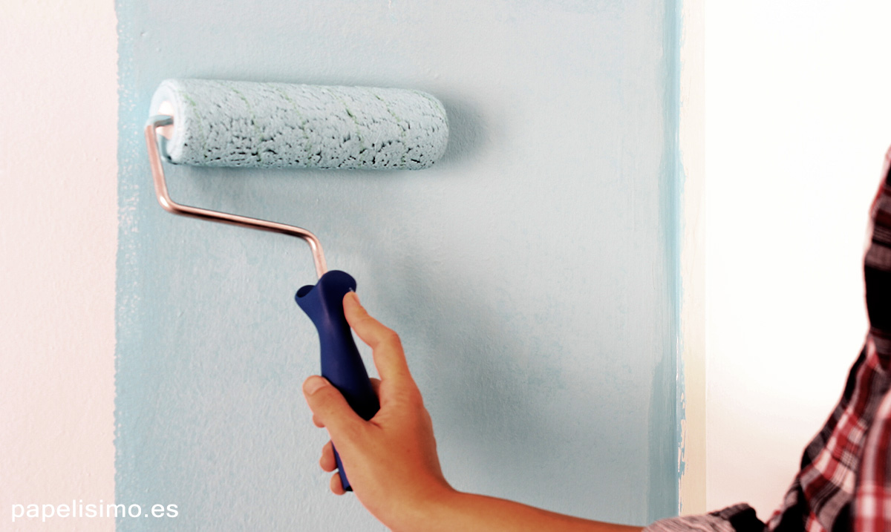
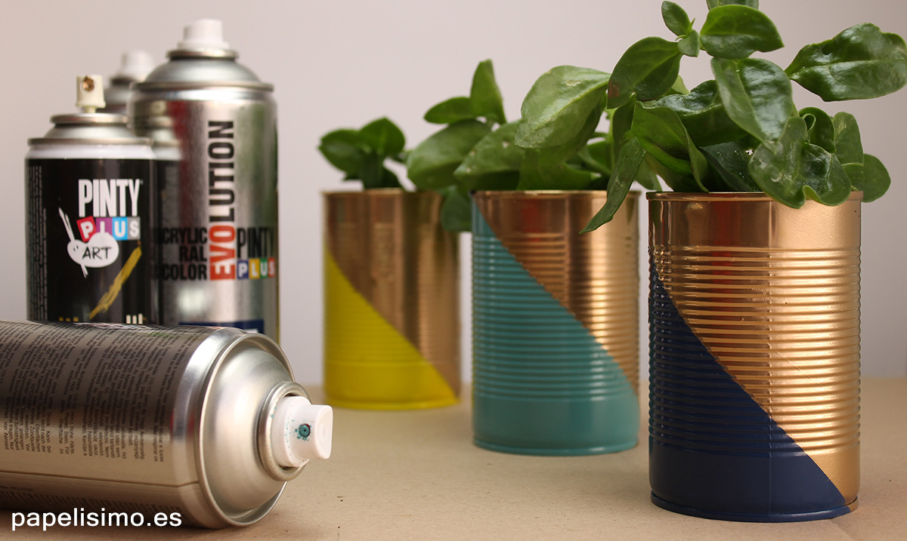
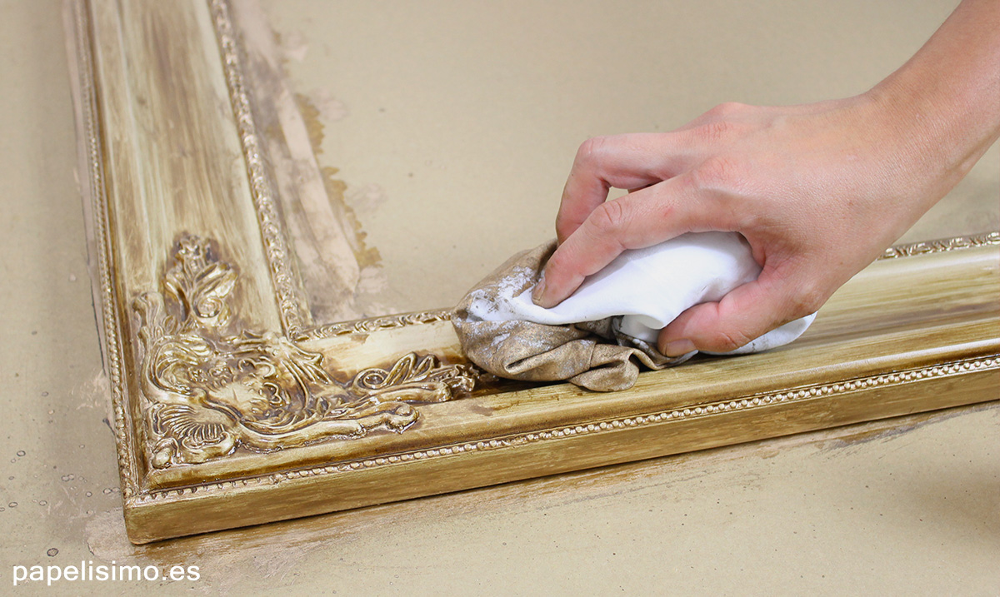

Mommitablog
Blog de una mama migrante.
"Porque en este hermoso viaje de la maternidad, nunca tienes que estar sola."
Los mejores hacks para tus fiestas los puedes conseguir aqui
Cómo quitar manchas de pintura: Trucos y consejos
¿Has pintado en casa o has hecho alguna manualidad que ha dejado manchas de pintura que no sabes cómo limpiar? Todas las manchas se pueden quitar, cada una con un producto diferente, pero la rapidez es fundamental. Una vez la pintura esté seca será más difícil o no se podrá eliminar.
Te dejo una lista con los tipos de manchas más comunes y cómo eliminarlas (de más fácil a más difícil de eliminar):
1. Cómo quitar manchas de pintura para niños:
De este tipo de machas tenemos todos los días en casa. Por suerte, como se da por hecho que los niños se manchan bastante y son fáciles de eliminar porque la pintura para niños normalmente es pintura con base de agua. Si la mancha está húmeda, lava la mancha directamente con agua. Si la mancha está seca, deja 30 minutos en remojo con un poco de jabón. Limpia los pinceles con agua y jabón
2. Cómo quitar manchas de lápiz de pared:
No es nada raro que, cuando los niños están aprendiendo a pintar, quieran plasmar sus obras de arte por toda la casa. Lo mejor para eliminar de la pared los dibujos hechos con lápiz es borrar con una goma de borrar normal. El truco de la goma de borrar sirve con lápices normales, lápices de colores y ceras, pero si es rotulador no se podrán eliminar, a no ser que sean rotuladores lavables para niños (especiales para estos casos de emergencia).
3. Cómo quitar manchas de pintura acrílica para madera:
Lo más importante para no tener manchas al pitar con pintura acrílica es proteger la superficie de trabajo con papel o cartón antes de pintar, pero si has pintado o restaurado algún mueble, verás que por mucho que tapes es imposible que no se manche nada. Para quitar las manchas de la ropa, pon el remojo antes de que la pintura se seque y luego lava normalmente. Para limpiar herramientas de trabajo, limpia con agua y jabón inmediatamente después de pintar. Si no tienes tiempo para limpiarlas, pon en un cubo con agua en remojo para que la pintura no endurezca y limpia después, una vez que la pintura se seque no la podrás eliminar.
4. Cómo quitar manchas de pintura acrílica para pared:
Es una pintura con base acrílica, por lo que se limpia exactamente igual a la anterior. Para limpiar el suelo (aunque lo ideal es taparlo con papel para no tener que limpiar y que no se estropee), usa fregona bastante húmeda, antes de que la pintura está seca, cambiando varias veces el agua hasta que salga limpia. Si queda alguna gota dura de pintura en el suelo, rasca con cuidado usando una espátula.
5. Cómo quitar manchas de spray:
El spray es muy resistente y difícil de quitar, así que lo principal es intentar no manchar tapando muy bien toda la superficie de trabajo y usando ropa vieja que no te importe manchar. La pintura es spray no tiene base acrílica, por lo que estas manchas no se pueden eliminar con agua. Para quitar manchas de spray de suelo, mesa o manos, usa aguarrás o disolvente sintético. También puedes usar como alternativa algodón con quitaesmalte de uñas (acetona), funciona igual de bien y es un producto que suele estar en todas las casas.
6. Cómo quitar manchas de betún de judea:
El betún de judea tampoco se puede limpiar con agua, usa aguarrás, disolvente sintético o quitaesmalte para uñas.
7. Limpiar otras manchas difíciles:
Aunque no sean manchas de pintura, nunca está de más conocer algunos trucos: Limpiar manchas de vino: sal para manteles y alfombras o agua oxigenada para la ropa. Cómo eliminar el mal olor a sudor en la ropa. Las manchas de sangre seca se pueden limpiar con pasta de dientes. ¿Conoces algún truco más? ¿Se te ha resistido alguna vez una mancha que no has sabido cómo limpiar?
Explora nuestrasincreibles Ideas de decoracion para tus fiestas.
Conservacion de la comida
Descubre como sorprender a tus invitados con alimentos frescos y deliciosos.
Invitaciones, recuerdos y detalles para tu fiesta
Ideas rápidas y sabrosas para cuando tienes poco tiempo.